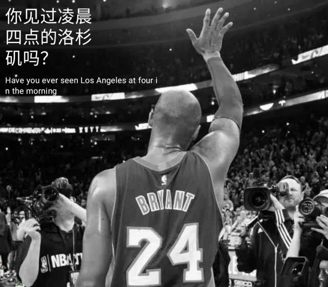
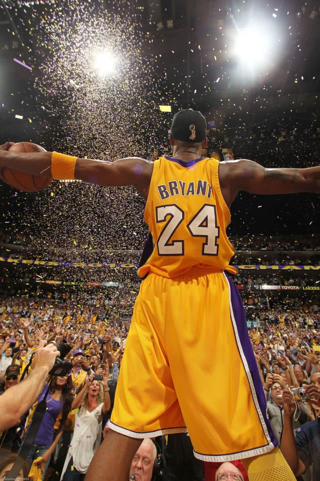
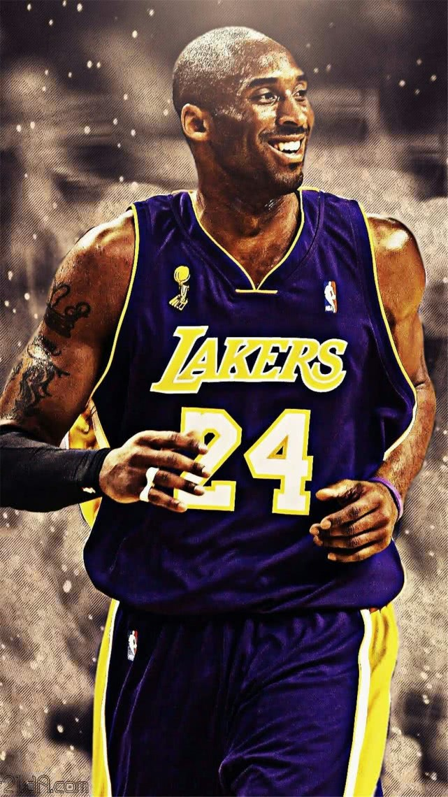
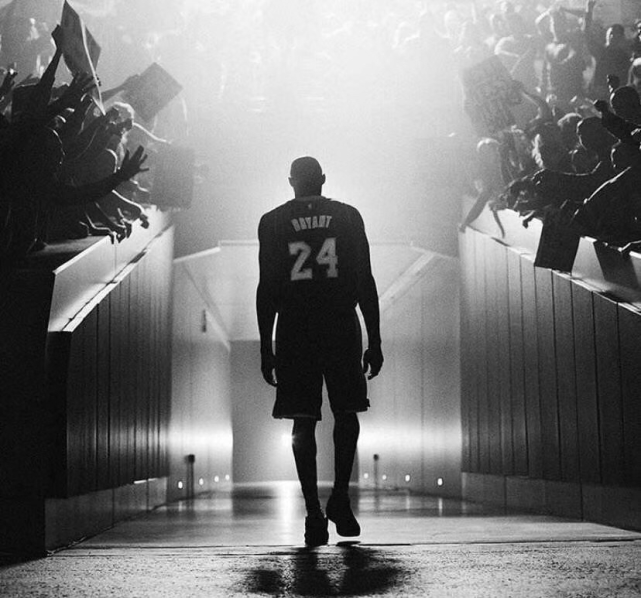

夏沫小屋 2020-04-29
职业生涯20年，科比全部效力于湖人，场均25分5.2篮板4.7助攻、5次总冠军、2次总决赛MVP、1次常规赛MVP、15次最佳阵容、12次最佳防守阵容、18次入选全明星……这样一串数据，足够伟大，但还不足以让“60E”对他爱到死心塌地。爱他，是因为在那串数据背后起起伏伏的故事，像极了我们每个人的人生。选秀大会上，有12名球员比他先被叫到名字；职业生涯前两年，他都是湖人队的替补，150场比赛里一共只打了7次首发；职业生涯第一次在季后赛中有机会改写历史，他却连续投出3个三不沾。甚至一直到年少成名意气风发的三连冠期间，他还一直活在奥尼尔的阴影之下。科比的天赋早就毋庸置疑，但在当时的NBA，他并非一开始就能凭借天赋站稳脚跟。不同于之前的乔丹，之后的詹姆斯，科比并非从一开始就是故事的主角。那串列举他荣耀里的每一个数字，都是他自己一步一步拼出来的。
逆袭，这是科比职业生涯第一章的关键词。然而，在他已经实现人生的逆袭之后，故事又发生了反转。跟奥尼尔分开之后，他经历了漫长的挣扎与蛰伏，然后在2008年遭受了最刻骨铭心的一次失败。跟04年那次败北不同，08年的科比终于等来了以球队老大的身份夺冠的机会，但他却眼睁睁看着湖人的宿敌带走了一切。
然后，就是NBA历史上最精彩的一段复仇故事。
2009年轻取魔术之后，科比又在2010年夺回了两年前失去的荣耀与尊严。抢七大战最后一秒才分出胜负。一轮伟大的系列赛，又给这段故事增添了数不尽的传奇色彩。如果不是绿军，如果不是抢七，如果不是复仇……如果千千万万个因素里缺失了任何一个，这段故事都不会如此荡气回肠。复仇。这是科比职业生涯的第二章。职业生涯大起大落，再起再落，这段故事本就足够迷人。但偏偏，科比又起又落。2013年对阵勇士的比赛中，科比轰然倒塌那一刻起，那个人挡杀人、佛挡杀佛的黑曼巴，就已经消失了。取而代之的，是一个被伤病和年龄折磨得痛苦不堪的“老汉”。职业生涯最后三年，他一共缺席了足足139场比赛。他2016年才退役，但其实早在2012年，他就打完了职业生涯最后一场季后赛。看上去，渐渐陨落，慢慢告别，是科比的宿命。但他第三次打破宿命。
2016年4月13日，职业生涯告别战，科比在最后关头连续投进关键球，然后用罚球拿到了单场第60分、职业生涯最后1分——跟职业生涯第1分一样，都是屏气凝神无比专注的罚球。只这一场狂欢，便抵消了无数个日夜的辛酸。就像就像一头沉睡多年的暮年雄狮，在最后一刻又突然仰天嘶吼，以致百兽震惶。而当所有人都以为他要回来大杀四方血溅疆场时，他却又温柔告别。一句“Mamba Out”，一个飞吻，就像一头沉睡多年的暮年雄狮，在最后一刻又突然仰天嘶吼，以致百兽震惶。而当所有人都以为他要回来大杀四方血溅疆场时，他却又温柔告别。一句“Mamba Out”，一个飞吻，就像两颗温柔炸弹，耳边悄无声息，心里却顷刻炸裂，万般翻涌。至此曼巴完美落幕。
